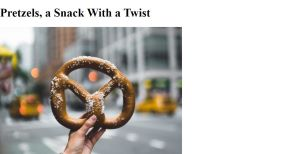
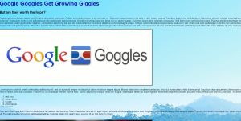
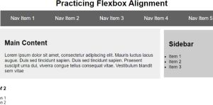
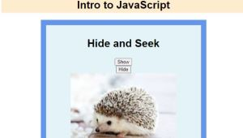
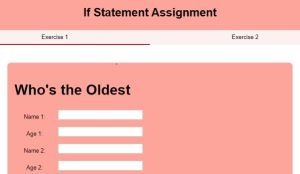

Assignments
-
Assignment 1 - Basic HTML

The goal of Assignment 1 was to setup a basic homepage with links to every assignment, along with a directory
-
Assignment 2 - Basic CSS

The goal of Assignment 2 was to introduce basic CSS style editing and additions in preparation for future projects.
-
Assignment 3 - Page Layout

The goal of Assignment 3 was to create a single webpage which lays out content using css flexbox.
-
Assignment 5 - Page Layout
The goal of Assignment 5 was to recreate a sample webpage to gain extra flexbox practice.
-
Assignment 6 - JavaScript, Buttons, Functions, and more.

The goal of Assignment 6 was to introduce the basics of javascript powered applications in html
-
Assignment 6 - JavaScript, Buttons, Functions, and more.

The goal of Assignment 6 was to introduce the basics of javascript powered applications in html